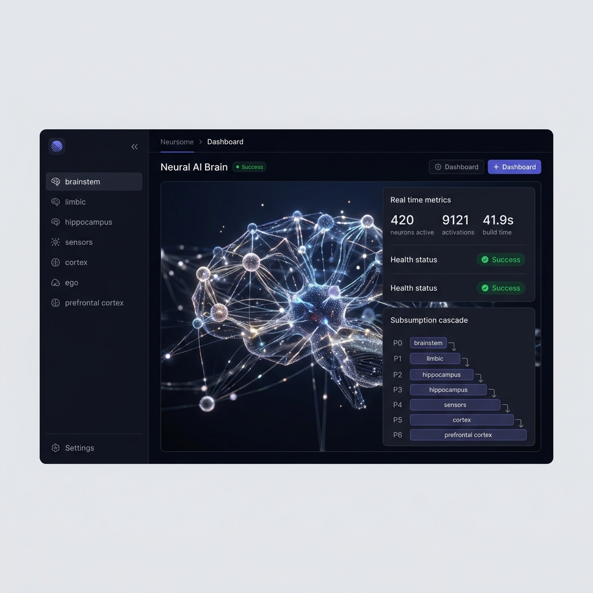

폴더로 AI 행동을 구조화합니다. 각 폴더가 규칙이고, 각 경로가 문장입니다. 데이터베이스 없이, 클라우드 없이, 토큰 소비 없이. 4MB 바이너리와 파일시스템만으로.

NeuronFS는 파일시스템을 통해 AI 규칙을 구조화하고 우선순위를 부여하는 프롬프트 거버넌스 도구입니다. 규칙은 프롬프트 수준에서 결정론적이며, 최종 LLM 준수는 확률적입니다.
mkdir로 규칙을 만들고, rm으로 삭제하고, git diff로 거버넌스를 추적합니다. 모든 변경은 감사 가능하고, 버전 관리되며, 사람이 읽을 수 있습니다.
규칙은 프롬프트 생성 단계에서 OS dentry 캐시를 통해 조회됩니다. 임베딩 계산도, 유사도 검색도, API 호출도 없습니다.
네트워크 호출 제로. 텔레메트리 제로. USB에 담아 배포. 군사, 의료, 금융 — 데이터가 외부로 나갈 수 없는 모든 환경에서 작동합니다.
하나의 두뇌, 6개 출력: GEMINI.md, .cursorrules, CLAUDE.md, AGENTS.md, COPILOT.md, .windsurfrules. 동일한 거버넌스, 모든 도구.
헤비안 학습: 자주 발화하는 뉴런은 강화됩니다. TTL 감쇠: 사용하지 않는 뉴런은 사라집니다. 폐쇄 학습 루프: 스킬이 자동으로 축적됩니다.
클라우드 없음. 구독 없음. 벤더 종속 없음. 4MB Go 바이너리 하나. AGPL-3.0 오픈소스. 가장 비싼 부분은 USB 드라이브 가격입니다.
로드니 브룩스의 로보틱스 아키텍처(1986)에서 영감을 받았습니다. 하위 계층이 emit 파이프라인에서 구조적 우선권을 가지며, 개념적으로 하드웨어 인터럽트와 유사합니다.
뇌간(P0)에 禁 폴더가 있으면, emit 파이프라인은 이를 NEVER 계층 규칙으로 배치합니다. 상위 계층은 프롬프트 생성 수준에서 이를 약화시킬 수 없습니다.
규칙을 폴더로 정의합니다. 폴더 이름이 규칙입니다. 깊이 = 구체성.
트리를 순회하고, 서브섬션을 해결하고, 원하는 AI 도구에 맞게 출력합니다.
출력된 파일을 AI 도구가 읽습니다. 거버넌스 활성화.
모든 벤치마크는 내부 테스트(go test ./...)에서 수행되었습니다. 독립적인 재현을 권장합니다.
| 모델 | 크기 | 기본 | + NeuronFS | 향상 |
|---|---|---|---|---|
| Gemma 4 | 8.9 GB | 22 / 40 | 31.5 / 40 | +43% |
| Llama 3 | 70 GB | 23 / 40 | 29 / 40 | +26% |
| GPT-4o | 클라우드 | 28 / 40 | 35 / 40 | +25% |
| ID | 테스트 | 지연시간 | 결과 |
|---|---|---|---|
| L-1 | 활성화 정확도 (10세션) | 12ms | PASS |
| L-2 | 지식 업데이트 우선순위 | 8ms | PASS |
| L-3 | 서브섬션 캐스케이드 | 1ms | PASS |
| L-4 | TTL 보호관찰 | 15ms | PASS |
| L-5 | 회로 차단기 (Bomb) | 3ms | PASS |
| L-6 | 극성 계산 | 1ms | PASS |
| 기능 | NeuronFS | Mem0 | Letta | Vector DB |
|---|---|---|---|---|
| 인프라 | 제로 (4MB) | 클라우드 API | 서버 필요 | 클라우드 |
| 규칙 결정론 | 구조적 (프롬프트 수준) | 확률적 | 부분적 | 없음 |
| 사람이 읽기 | 폴더 = 규칙 | API 전용 | JSON | 벡터 |
| 버전 관리 | 네이티브 git | 독점 | 독점 | 없음 |
| 망분리 배포 | USB 배포 | 인터넷 필요 | 인터넷 필요 | 인터넷 필요 |
| 비용 | 영원히 $0 | $99+/월 | 무료 계층 | $70+/월 |
| NeuronFS는 | NeuronFS는 아닙니다 |
|---|---|
| 프롬프트 구조화 도구 | 모델 수정 시스템 |
| 파일시스템 기반 규칙 정리기 | 모든 용도의 벡터 DB 대체 |
| AI 에이전트 거버넌스 프레임워크 | 추론 수준 강제 레이어 |
| 지시 준수율을 높이는 방법 | 100% 준수 보장 |
NeuronFS는 AI 도구의 입력을 구조적 정밀도로 제어합니다. 출력은 여전히 확률적입니다.
禁 폴더는 NEVER 계층 규칙이 프롬프트에 반드시 나타남을 보장합니다. 모델이 절대 위반하지 않음을 보장하지는 않습니다.
벤치마크 결과는 내부 테스트이며, 독립적으로 검증되지 않았습니다. 커뮤니티의 재현을 환영합니다.